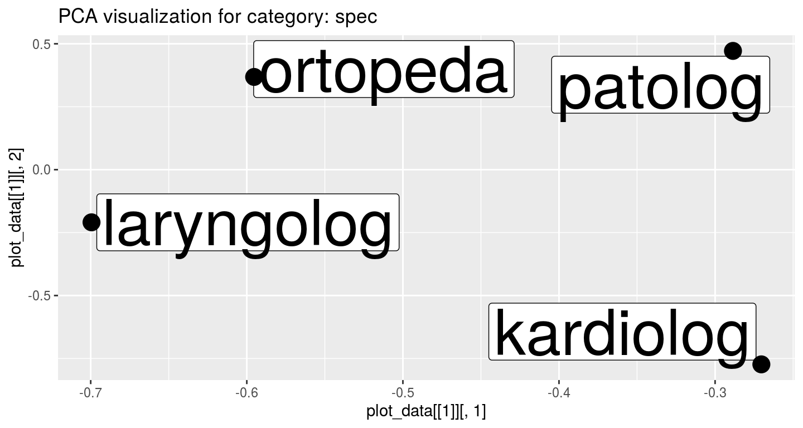
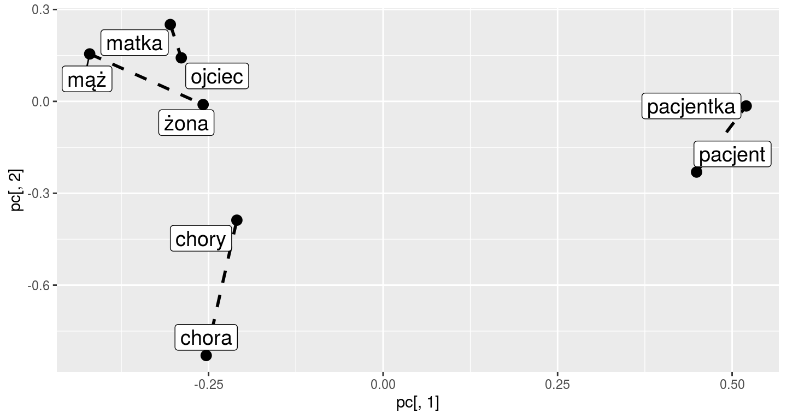
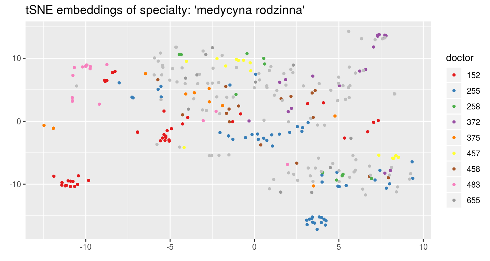
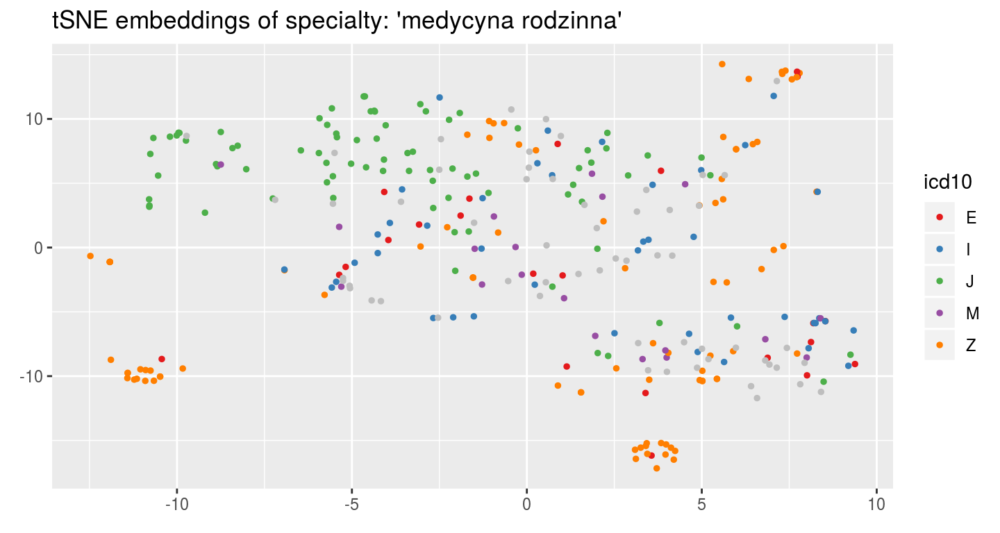
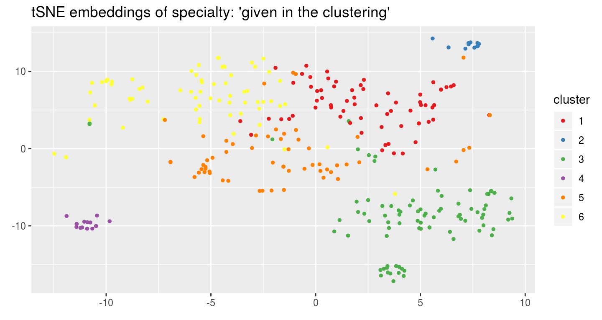
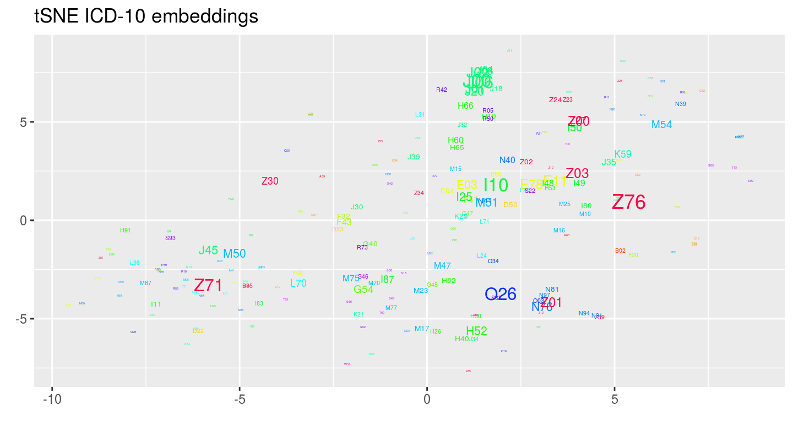

memr.Rmdlibrary(memr)Most of information about medical visits is often stored in an unstructured way as a free text written by doctors. This package allows for creating embeddings of medical records, convenient to a wide spectrum of tasks, like visualization of records, clustering etc.
The package provides a data with about 1000 visits from Polish health centers.
knitr::kable(visits_1000[1:10, ])| visit_id | icd10 | doctor_id | specialties |
|---|---|---|---|
| 624368 | O26 | 82 | ginekologia |
| 885869 | J02 | 245 | medycyna rodzinna |
| 885974 | Z30 | 82 | ginekologia |
| 886636 | N76 | 239 | ginekologia |
| 1055522 | J20 | 157 | medycyna rodzinna, pediatria |
| 1056745 | N81 | 6 | ginekologia |
| 1057217 | M51 | 255 | medycyna rodzinna |
| 1214269 | J04 | 255 | medycyna rodzinna |
| 1318257 | B02 | 255 | medycyna rodzinna |
| 1318506 | O26 | 82 | ginekologia |
For the visits we have the descriptions of interview, with the extracted medical terms and their categories:
knitr::kable(interview_1000[1:3])
|
|
|
In the same form we have the descriptions of examinations and recommendations.
Firstly we can find all medical terms and transform the descriptions into more convenient form:
inter <- parse_data(interview_1000)
exam <- parse_data(examination_1000)
knitr::kable(inter[[1]][1:10, ])| term | category | count |
|---|---|---|
| achilles | anat | 1 |
| acidum | anat | 1 |
| acidum | cecha | 1 |
| acidum | chm | 1 |
| aktualny | cecha | 1 |
| aktywność | proc | 3 |
| aktywność fizyczna | proc | 2 |
| aktywność sportowa | proc | 1 |
| aktywny | cecha | 3 |
| alergia | chr | 14 |
knitr::kable(inter[[2]][1:3])| x | |
|---|---|
| 8834656 | ból, temperatura ciała, tempo |
| 8040952 | bark, ciśnienie, nadgarstek, nasilenie dolegliwości, nic, poziom, sód, staw ręki, tętno, ujemny |
| 1898742 | apetyt, duży, lek, lękowy, nic, niewydolność, pamięć, poczucie, poprawa stanu psychicznego, prawe oko, skarga, słaby, sód, ujemny, w ciągu dnia |
Now, we can compute embeddings:
inter_descriptions <- inter[[2]]
exam_descriptions <- exam[[2]]
embedding_size <- 8
inter_term_vectors <- embed_terms(unique(inter[[1]]$term), inter_descriptions, embedding_size = embedding_size)
#> INFO [2019-12-13 11:04:57] 2019-12-13 11:04:57 - epoch 1, expected cost 0.0894
#> INFO [2019-12-13 11:04:57] 2019-12-13 11:04:57 - epoch 2, expected cost 0.0497
#> INFO [2019-12-13 11:04:57] 2019-12-13 11:04:57 - epoch 3, expected cost 0.0413
#> INFO [2019-12-13 11:04:57] 2019-12-13 11:04:57 - epoch 4, expected cost 0.0371
#> INFO [2019-12-13 11:04:57] 2019-12-13 11:04:57 - epoch 5, expected cost 0.0345
#> INFO [2019-12-13 11:04:57] 2019-12-13 11:04:57 - epoch 6, expected cost 0.0327
#> INFO [2019-12-13 11:04:57] 2019-12-13 11:04:57 - epoch 7, expected cost 0.0313
#> INFO [2019-12-13 11:04:57] 2019-12-13 11:04:57 - epoch 8, expected cost 0.0303
#> INFO [2019-12-13 11:04:57] 2019-12-13 11:04:57 - epoch 9, expected cost 0.0294
#> INFO [2019-12-13 11:04:57] 2019-12-13 11:04:57 - epoch 10, expected cost 0.0287
#> INFO [2019-12-13 11:04:57] 2019-12-13 11:04:57 - epoch 11, expected cost 0.0280
#> INFO [2019-12-13 11:04:57] 2019-12-13 11:04:57 - epoch 12, expected cost 0.0275
#> INFO [2019-12-13 11:04:57] 2019-12-13 11:04:57 - epoch 13, expected cost 0.0271
#> INFO [2019-12-13 11:04:57] 2019-12-13 11:04:57 - epoch 14, expected cost 0.0267
#> INFO [2019-12-13 11:04:57] 2019-12-13 11:04:57 - epoch 15, expected cost 0.0263
exam_term_vectors <- embed_terms(exam[[1]]$term, exam_descriptions, embedding_size = embedding_size)
#> INFO [2019-12-13 11:04:57] 2019-12-13 11:04:57 - epoch 1, expected cost 0.1466
#> INFO [2019-12-13 11:04:57] 2019-12-13 11:04:57 - epoch 2, expected cost 0.0734
#> INFO [2019-12-13 11:04:57] 2019-12-13 11:04:57 - epoch 3, expected cost 0.0548
#> INFO [2019-12-13 11:04:57] 2019-12-13 11:04:57 - epoch 4, expected cost 0.0465
#> INFO [2019-12-13 11:04:57] 2019-12-13 11:04:57 - epoch 5, expected cost 0.0420
#> INFO [2019-12-13 11:04:57] 2019-12-13 11:04:57 - epoch 6, expected cost 0.0392
#> INFO [2019-12-13 11:04:57] 2019-12-13 11:04:57 - epoch 7, expected cost 0.0373
#> INFO [2019-12-13 11:04:57] 2019-12-13 11:04:57 - epoch 8, expected cost 0.0359
#> INFO [2019-12-13 11:04:57] 2019-12-13 11:04:57 - epoch 9, expected cost 0.0348
#> INFO [2019-12-13 11:04:57] 2019-12-13 11:04:57 - epoch 10, expected cost 0.0339
#> INFO [2019-12-13 11:04:57] 2019-12-13 11:04:57 - epoch 11, expected cost 0.0332
#> INFO [2019-12-13 11:04:57] 2019-12-13 11:04:57 - epoch 12, expected cost 0.0326
#> INFO [2019-12-13 11:04:57] 2019-12-13 11:04:57 - epoch 13, expected cost 0.0321
#> INFO [2019-12-13 11:04:57] 2019-12-13 11:04:57 - epoch 14, expected cost 0.0317
#> INFO [2019-12-13 11:04:57] 2019-12-13 11:04:57 - epoch 15, expected cost 0.0313
knitr::kable(inter_term_vectors[1:5, ])| jajnik | -0.5250897 | -0.2260535 | -0.0966656 | 0.3418502 | 0.1102451 | -0.4967396 | -0.1454571 | 0.0878155 |
| powód wizyty ginekologicznej | -0.7332904 | -0.9079077 | -0.1060645 | -0.4317912 | 0.4032139 | 0.3417570 | 0.4434612 | -0.3368444 |
| nieregularny | -0.0592726 | -0.8252704 | -0.2889622 | -0.0461139 | 0.3152012 | -0.2957996 | 0.1824914 | 0.0567866 |
| kolonoskopia | -0.0696577 | -0.3318594 | -0.2129605 | -0.2282260 | 0.6195326 | 0.2759004 | -0.0375025 | 0.1102348 |
| obniżenie | -0.1588032 | -0.0964152 | -0.7035043 | -0.3088086 | 0.0200333 | -0.3260307 | -0.3287571 | -0.1042769 |
Terms from the chosen category can be visualized:
visualize_term_embeddings(inter[[1]], inter_term_vectors, c("spec"), method = "PCA")
To validate the quality of embeddings we can perform the term analogy task (see more by ?analogy_task). The package delivers the analogy test set.
knitr::kable(evaluate_term_embeddings(inter_term_vectors, n = 5, terms_pairs_test))| 1 | 2 | 3 | 4 | 5 | MEAN | |
|---|---|---|---|---|---|---|
| pain | 0.0000 | 0.0500000 | 0.1000000 | 0.1000000 | 0.1000000 | 0.0700000 |
| adj | 0.0000 | 0.0000000 | 0.0000000 | 0.0000000 | 0.0000000 | 0.0000000 |
| right | 0.5000 | 1.0000000 | 1.0000000 | 1.0000000 | 1.0000000 | 0.9000000 |
| left | 0.0000 | 0.0000000 | 0.0000000 | 0.0000000 | 0.0000000 | 0.0000000 |
| consult | 0.0000 | 0.0000000 | 0.0000000 | 0.0000000 | 0.0000000 | 0.0000000 |
| anatomic | 0.0000 | 0.0000000 | 0.0000000 | 0.0000000 | 0.0000000 | 0.0000000 |
| man_woman | 0.0000 | 0.1666667 | 0.3333333 | 0.3333333 | 0.3333333 | 0.2333333 |
| synonym | 0.0000 | 0.0000000 | 0.0000000 | 0.0000000 | 0.0000000 | 0.0000000 |
| MEAN | 0.0625 | 0.1520833 | 0.1791667 | 0.1791667 | 0.1791667 | 0.1504167 |
For each type of analogy we compute the mean accuracy.
Analogies can be plotted to see if the connection lines are parallel:
visualize_analogies(inter_term_vectors, terms_pairs_test$man_woman, find_analogies = TRUE, n = 10)
Having the embeddings of terms, we can compute embeddings of visits:
visits_vectors <- embed_list_visits(inter_descriptions, exam_descriptions, inter_term_vectors, exam_term_vectors)
knitr::kable(visits_vectors[1:5, ])| 8834656 | 0.0477718 | 0.3416259 | 0.6020780 | -0.0781046 | -0.0204286 | 0.0743295 | -1.0640732 | 0.1230616 | 0.6152174 | 0.1576910 | -0.1028008 | -0.2325897 | 1.1068377 | -0.5566383 | 0.2076700 | -0.9786025 |
| 8040952 | 0.2859907 | 0.1174086 | 0.3410140 | 0.2776366 | -0.0122754 | 0.2678638 | 0.0315066 | -0.1299221 | NA | NA | NA | NA | NA | NA | NA | NA |
| 1898742 | 0.3009898 | 0.1787937 | 0.1587241 | 0.2971205 | 0.0419963 | 0.3508933 | -0.0724837 | -0.2790734 | 0.2270200 | 1.0944763 | -0.0240037 | -0.1472944 | -0.0843081 | -0.3903938 | 0.1661915 | -0.6838200 |
| 1919649 | 0.2534906 | 0.2786975 | 0.3535578 | 0.0419521 | 0.2644723 | 0.3065976 | -0.0985929 | -0.2633122 | -0.0936139 | 0.1920622 | 0.2664002 | -0.0359872 | 0.6439745 | -0.5599459 | 0.0993295 | -0.4749020 |
| 8029957 | -0.1549230 | 0.2923651 | -0.0546498 | -0.3406486 | 0.0130945 | -0.0015723 | 0.0035741 | 0.2529395 | 0.0093941 | 0.4425416 | 0.0029227 | -0.1906418 | 0.0593670 | -0.3124548 | 0.4095162 | -0.4421947 |
And now we can visualize the visits on the plot and color by the doctors’ IDs:
visualize_visit_embeddings(visits_vectors, visits_1000, color_by = "doctor",
spec = "medycyna rodzinna", n_doctors = 9)
or by ICD-10 code:
visualize_visit_embeddings(visits_vectors, visits_1000, color_by = "icd10",
spec = "medycyna rodzinna", n_codes = 5)
On the visits’ embeddings we can run the k-means algorithm:
clusters <- cluster_visits(visits_vectors, visits_1000, spec = "medycyna rodzinna", cluster_number = 6)and plot the clusters:
visualize_visit_embeddings(visits_vectors, visits_1000, color_by = "cluster",
spec = "medycyna rodzinna", clusters = clusters)
For every cluster we can see the most frequent recommendations from chosen categories:
recom <- parse_data(recommendation_1000)
recom_descriptions <- recom[[2]]
rec_tables <- get_cluster_recommendations(recom_descriptions, clusters, recom_table = recom[[1]])
knitr::kable(rec_tables[[2]])| recommendation | count | frequency |
|---|---|---|
| kontynuacja leków | 7 | 0.6363636 |
| kontynuacja leczenia | 4 | 0.3636364 |
| kontrola lekarska | 1 | 0.0909091 |
or from all categories:
rec_tables <- get_cluster_recommendations(recom_descriptions, clusters, category = "all")
knitr::kable(rec_tables[[2]])| recommendation | count | frequency |
|---|---|---|
| wieczorem | 11 | 1.0000000 |
| x | 11 | 1.0000000 |
| konieczna kontrola lekarska | 10 | 0.9090909 |
| pogorszenie stanu zdrowia | 10 | 0.9090909 |
| kontynuacja leków | 7 | 0.6363636 |
| kontynuacja leczenia | 4 | 0.3636364 |
| kontrola lekarska | 1 | 0.0909091 |
| pogorszenie | 1 | 0.0909091 |
| zdrowie | 1 | 0.0909091 |
If we have a new visit, we can assign it to the most appropriate cluster:
inter_descr <- paste("ból głowy", "złe samopoczucie", "obniżony nastrój", sep = ", ")
exam_descr <- paste("niskie ciśnienie", "stan ogólny dobry", "temperatura ciała", "w normie",
"skierowanie", "badanie neurologiczne", sep = ", ")
visit_description <- c(inter_descr, exam_descr)
names(visit_description) <- c("inter", "exam")
cl <- assign_visit_to_cluster(visit_description, clusters, inter_term_vectors, exam_term_vectors)
cl
#> $cl
#> 6
#> 6
#>
#> $distances
#> 1 2 3 4 5 6
#> 0.17024242 0.17358963 0.12008698 0.24265101 0.20167689 0.09500041As the last nice thing we can see the embeddings of ICD-10 codes:
visualize_icd10(visits_vectors, visits_1000)